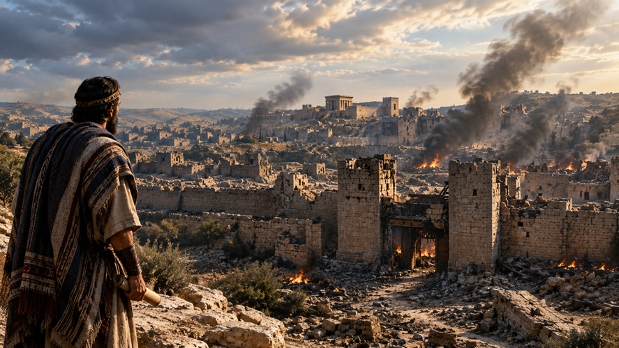

¿Qué fue este período?
Los "años de silencio": Se le llama así tradicionalmente porque se creía que Dios no envió nuevos profetas ni hubo nueva revelación escrita durante ese tiempo.
Una etapa activa: Aunque no hubo profetas bíblicos, fue una época de grandes cambios políticos, sociales y religiosos que moldearon el mundo en el que nació Jesús.

Etapas políticas principales
Dominio persa (hasta el 331 a. C.): Los judíos regresaron del exilio en Babilonia y reconstruyeron el Templo de Jerusalén bajo el Imperio Persa.

Dominio griego (331–167 a. C.): Alejandro Magno conquistó la región. Tras su muerte, sus generales dividieron el territorio. Los gobernantes de la dinastía seléucida intentaron imponer la cultura griega por la fuerza.

Independencia judía (167–63 a. C.): La revuelta de los macabeos (o asmoneos) logró liberar a Judea temporalmente y establecer un reino judío independiente..

Dominio romano (desde el 63 a. C.): El general Pompeyo conquistó Jerusalén. Los romanos gobernaron Judea a través de reyes locales como Herodes el Grande.

Cambios religiosos y sociales
Nacimiento de grupos religiosos: Aparecieron facciones judías importantes como los fariseos, los saduceos, los esenios y los zelotes.

Aparición de las sinagogas: Como el Templo a veces estuvo amenazado o profanado, la sinagoga se convirtió en el centro de reunión, estudio de la Torá y culto local para los judíos.

Literatura intertestamentaria: Se escribieron diversos textos apócrifos y pseudoepígrafos que reflejan la mentalidad, las crisis y las esperanzas mesiánicas de la época.

Desarrollo de la Septuaginta (LXX): Son los escritos de la Ley traducidos al griego, que se creó de forma progresiva en el siglo III a. C. en Alejandría, Egipto.